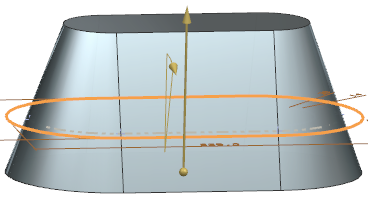
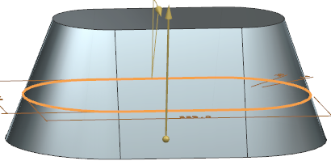
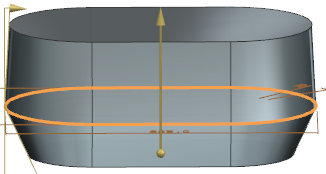
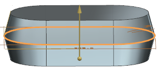
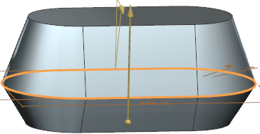

您可以将拔模或斜度添加到拉伸特征的一侧或多侧。
|
注释 |
只能将拔模添加到基于平截面的拉伸特征。 |
拔模类型：
从起始限制 — 创建从拉伸起始限制开始的拔模。将在起始限制位置维持拉伸截面的初始大小。

从截面 — 创建从拉伸截面开始的拔模，将在截面平面位置维持拉伸截面的初始大小。

从截面 — 不对称角 — 在从截面的两侧延伸拉伸特征时可用。将创建一个从拉伸截面开始、在该截面的前后两侧反向倾斜的拔模。

从截面 — 对称角 — 在从截面的两侧延伸拉伸特征时可用。将创建一个从拉伸截面开始、在该截面的前后两侧以相同角度反向倾斜的拔模。

从截面匹配的终止处 — 在从截面的两侧延伸拉伸特征时可用。创建一个从拉伸截面开始、在该截面的前后两侧反向倾斜的拔模。终止限制处的形状与起始限制处的形状相匹配，并且终止限制处的拔模角将更改，以保持形状的匹配。

角度选项：
单个 — 为拉伸特征的所有面添加单个拔模角。
多个 — 向拉伸特征的每个面相切链指定唯一的拔模角。